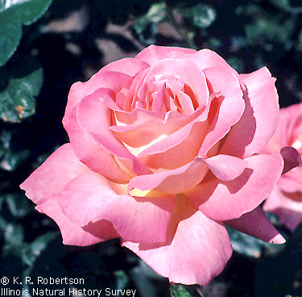

*listens to "What Is Beauty?" by Winds*
It's a decent effect, but not much more. I'm an artist, and I can't see too much potential in that. Sorry. 3/10.
School does indeed seem to come first. Shame, you can learn so much from the physics engine of N! Hope the ban'll be lifted soon.
*null*
All of these categories are useless, as all of the maps they describe can be put in to other categories.
Noob maps can be accessed by looking at the newest page.

All of these categories are useless, as all of the maps they describe can be put in to other categories.
Noob maps can be accessed by looking at the newest page.
And I had to come up there again.

Excuse me for being 14 again and taking a phrase out of context.
"Tileset" however, is neither incomplete (as it is complete for its purpose)
I disagree. Incomplete refers to a level that isn't complete, which means it doesn't have any (or a little) gold/enemies/objects in it.... It is an incomplete level, that's what I 'm saying. And of course a tileset is as such.
I'm posting an update for Dave since he's rather busy at work (or at least he tells me...  ).
).
Noctambulant are releasing an EP before the full album, entitled "Omen". It feature much of the same musical endeavour, if only a little more melancholic, dark, if you will. Me and Dave collaborated on the design of the cover, which rather reflects the music.
[Oh dear, cover did not upload properly. I'll try again later.]
No new music to report I'm afraid, there were some technological doodads gone wrong at the studio. As such is life.
Liner notes:
Enjoy what you can/will.
). Noctambulant are releasing an EP before the full album, entitled "Omen". It feature much of the same musical endeavour, if only a little more melancholic, dark, if you will. Me and Dave collaborated on the design of the cover, which rather reflects the music.
[Oh dear, cover did not upload properly. I'll try again later.]
No new music to report I'm afraid, there were some technological doodads gone wrong at the studio. As such is life.
Liner notes:
QuoteAll music performed and written by Noctambulant unless stated.
This release and all contained is Noctambulant 2006.
Many artists have an influence on this musical whimsy of ours,
And for that we sincerely thank them all,
Among others. Noctambulant are grateful to you, the listener for
Delving into our musical endeavour. Enjoy.
Enjoy what you can/will.
Allotropic metamorphic lyckantropean transformation.
I think I can chime in on this one to help.
In some ways, Patsy7z7 was correct, it is about perception. However the key thing is multi-sensory perception. You know that if you could not smell things, that you wouldn't be able to taste anything, yes? Well, this applies to all of your senses. Thus your colour perception relies on several other factors.
There is a way to test people's colour perception though, and as this is a relevant topic I'll continue. Right, before you do this, turn your monitor's brightness and contrast settings to maximum.
See this rose? Right, you'd say it was pink, wouldn't you? Well, that isn't enough, because, as Kablizzy rightly mentioned, someone's colour perception cannot vary so one sees something as green, and the other blue (of course, we the exception of purblind people). Now, compare the colour in the centre of the rose to this hexadecimal colour chart.
http://www.madkid.org/hexcolours.jpg
I'd say it was FF99CC. It's actual code, recognised in Photoshop, is F77EA9, so I wasn't that far off. Do the test before you reveal the actual colour. Then you can share your colour perception.
And here is my gradient of colour perception.

This is a fairly good colour perception, certainly in the top 20% of Californians. This is because the hexadecimal value for what I saw it as is less than that of the palest pink in the image. That is how you grade someone's colour perception, or at least how we do it now!
In some ways, Patsy7z7 was correct, it is about perception. However the key thing is multi-sensory perception. You know that if you could not smell things, that you wouldn't be able to taste anything, yes? Well, this applies to all of your senses. Thus your colour perception relies on several other factors.
There is a way to test people's colour perception though, and as this is a relevant topic I'll continue. Right, before you do this, turn your monitor's brightness and contrast settings to maximum.

See this rose? Right, you'd say it was pink, wouldn't you? Well, that isn't enough, because, as Kablizzy rightly mentioned, someone's colour perception cannot vary so one sees something as green, and the other blue (of course, we the exception of purblind people). Now, compare the colour in the centre of the rose to this hexadecimal colour chart.
http://www.madkid.org/hexcolours.jpg

I'd say it was FF99CC. It's actual code, recognised in Photoshop, is F77EA9, so I wasn't that far off. Do the test before you reveal the actual colour. Then you can share your colour perception.
And here is my gradient of colour perception.
This is a fairly good colour perception, certainly in the top 20% of Californians. This is because the hexadecimal value for what I saw it as is less than that of the palest pink in the image. That is how you grade someone's colour perception, or at least how we do it now!
Hi, my name is Julie but you'll know as Cheshire. I'm 18, live in Canada and speak English and French. I like music, information and clever indie games. I'm fiercely left-wing and an atheist. I may post in the Serious Discussion sub-forum but I probably won't post there frequently because I don't like discussion important issues with people who can't or won't understand them. I will post in the BnT and especially to offer a woman's opinion on your sexy topics.
By the way, why is the introduce yourself thread filled with mindless spam?
Nice to see another woman around here! Albeit me being an aged one, lucky you!

I haven't really been around that long, but I'm definitely around. I guess spam is a men's way of communicating, hehe.
Anyway, I'm here, so, yeah. You play N, or did you just stumble across us here?